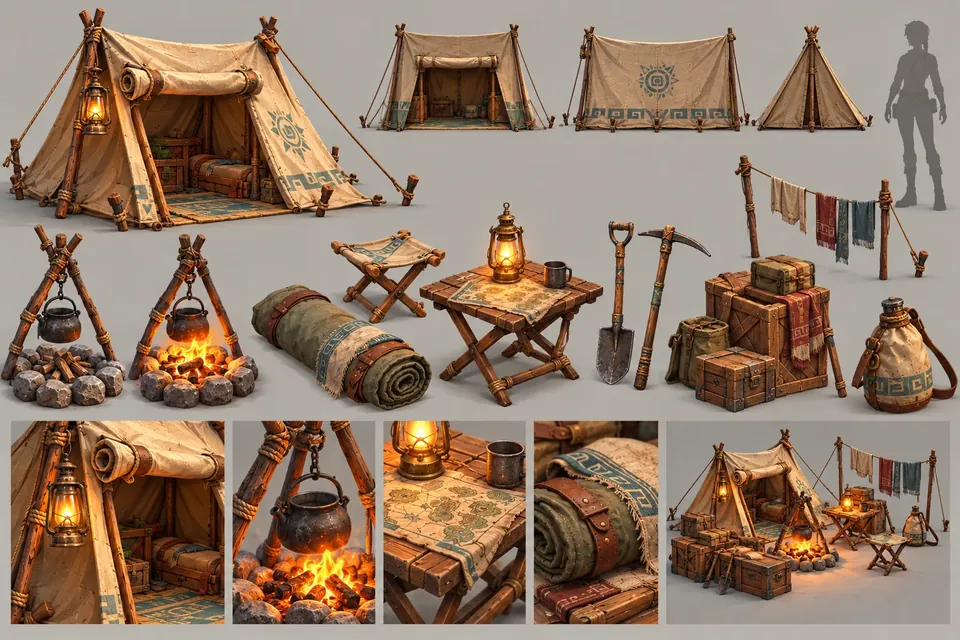
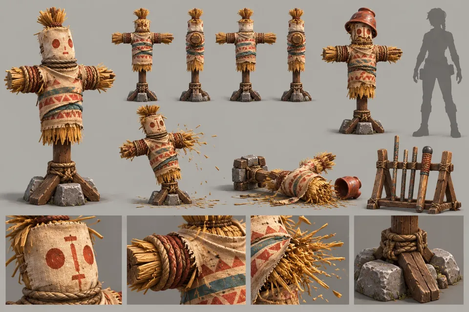
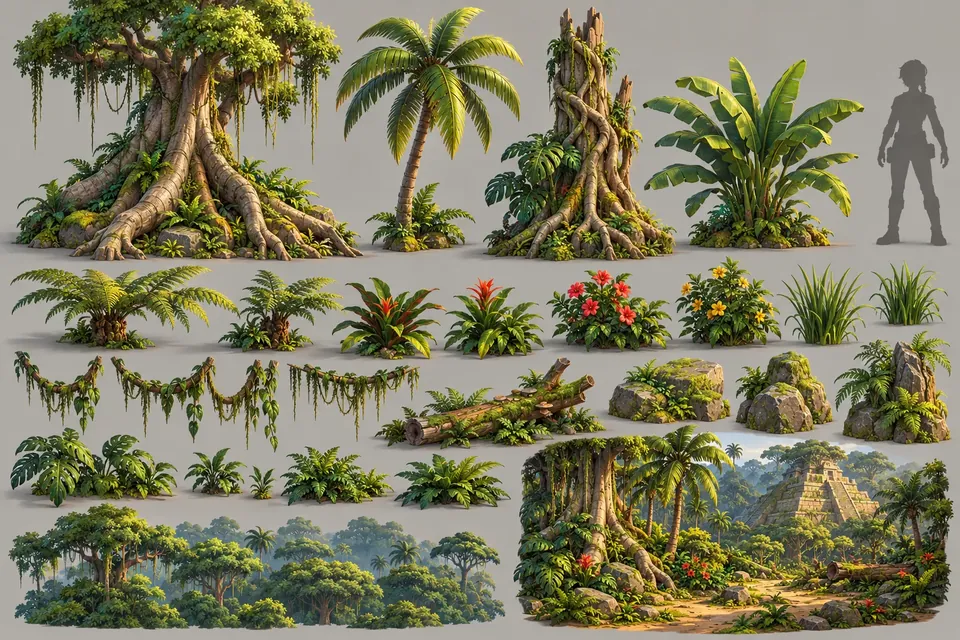
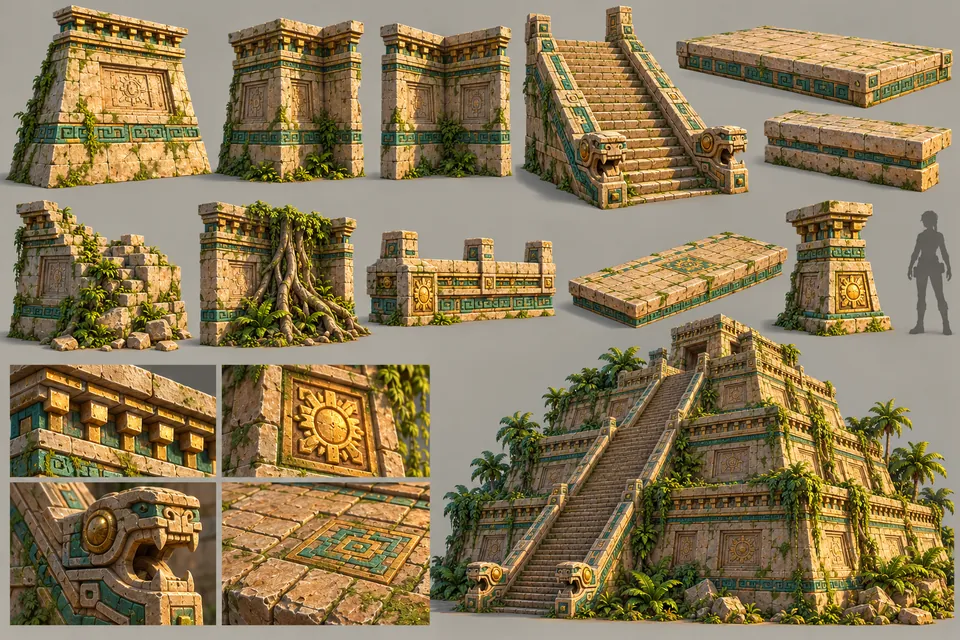
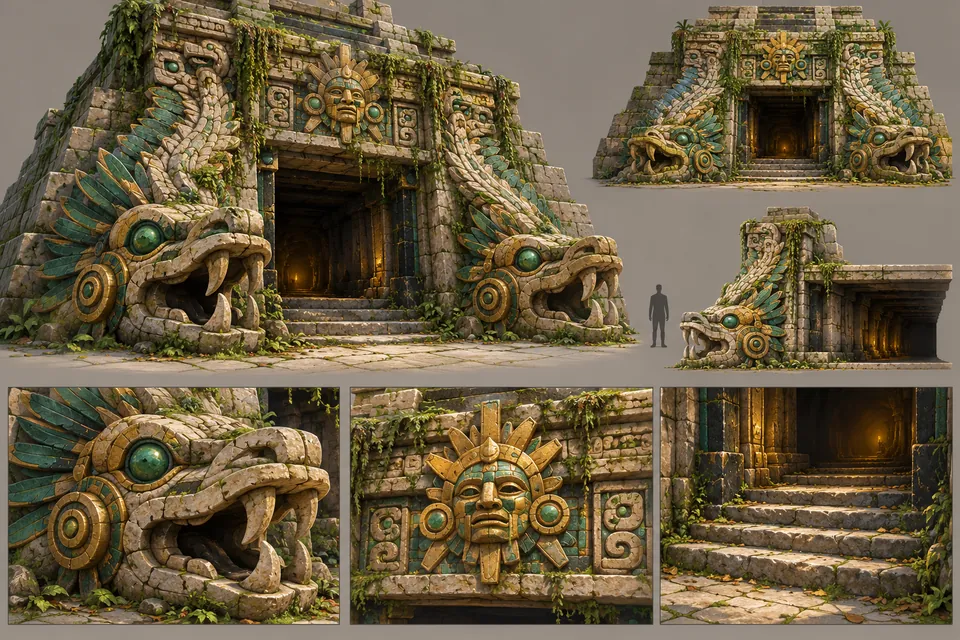
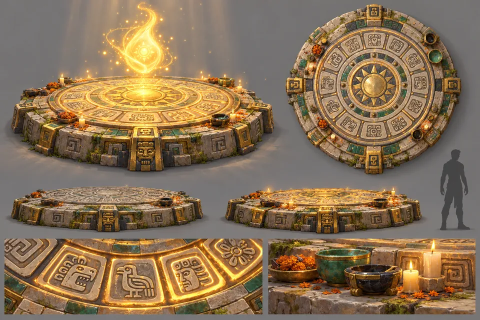
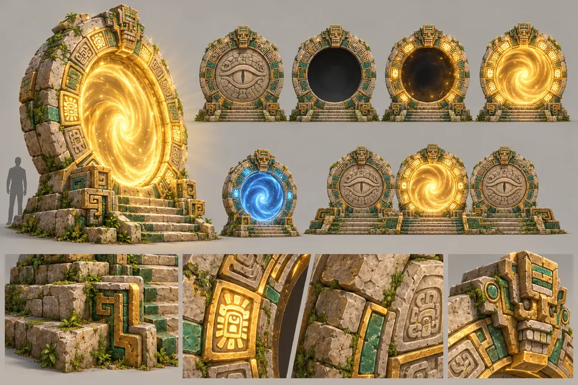
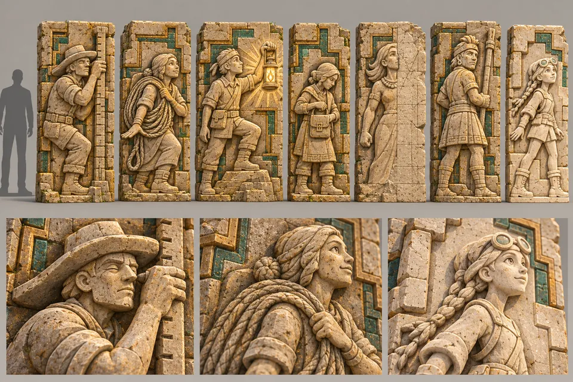
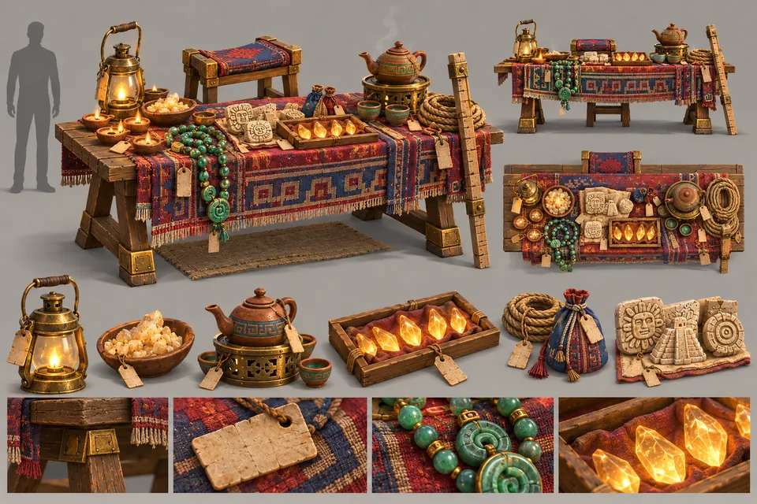
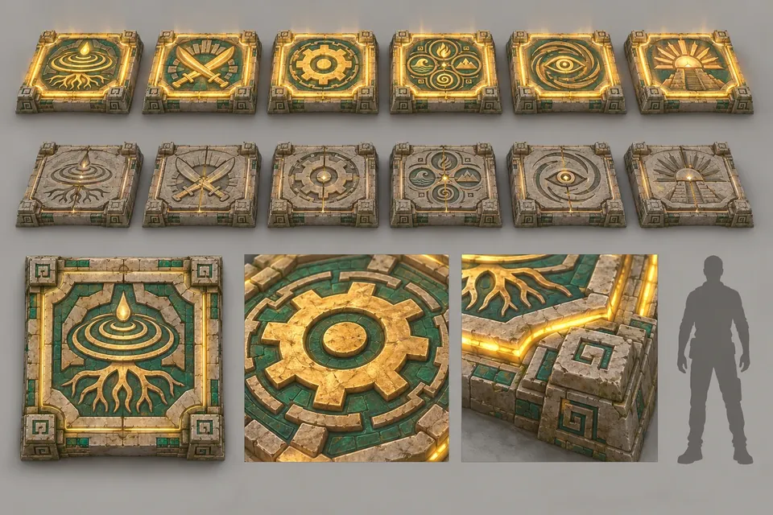

HUB01
Explorer camp kit
Tent, campfire and kettle tripod, map table and crates
Home / Art & Assets
Art & Assets
The camp, the forecourt and the great hall at the base of the pyramid.
The camp, the forecourt and the great hall at the base of the pyramid, built from thirteen sheets.

HUB01
Tent, campfire and kettle tripod, map table and crates

HUB02
Straw dummies with painted faces, with hit and knocked-down states

HUB03
Ceiba, palms, strangler fig, ferns, bromeliads and canopy cards

HUB04
Terrace walls, the grand stair with serpent balustrades, the summit parapet

HUB05
Two giant feathered serpents and a sun mask over the tunnel

HUB06
A calendar-wheel altar, dormant and awakened

HUB07
Sealed, dormant, igniting and active portals, and the three-portal dais

HUB08
The carved history wall: dark, partly lit and fully lit

HUB09
The Carved Climbers and the order as relief panels

HUB10
Oxlahun's stall with tagged goods and spirit shards

HUB11
A jaguar-backed lectern with a glowing screenfold codex

HUB12
Six emblem pads, locked and unlocked

HUB13
Game board, broom, polished floor, palm whistle, waxed flower, twill scrap, keepsakes and a chalk tally